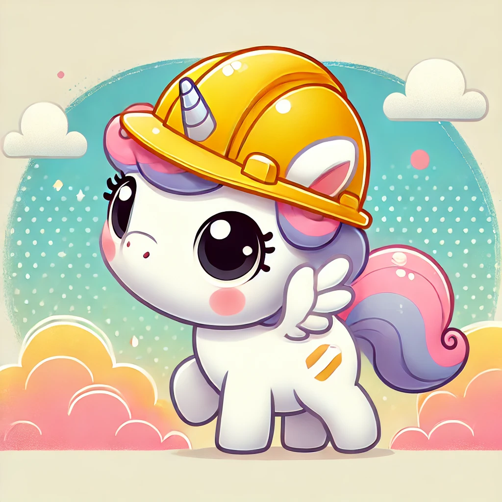

Maintenance en cours
Cette page revient bientôt.
La ressource demandée est temporairement indisponible. Réessayez un peu plus tard ou contactez l’administrateur du portail.

La ressource demandée est temporairement indisponible. Réessayez un peu plus tard ou contactez l’administrateur du portail.